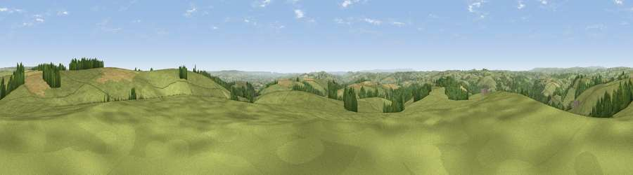

Viewpoint near Huntsham
#8456 in England · top 14% of its area beats it · near Huntsham · access?Where it is
The exact computed spot (SS 97325 18750). Click the marker for map links.
Public access: no public right of way or access land is recorded at this exact spot — it may be on private land. Computed from Natural England's CRoW access layer and OpenStreetMap rights of way — not the legal definitive map. Always verify locally.
The view, rendered

A 360° render of this exact spot computed from the terrain model, tree cover and land cover — summer colours, afternoon light, calibrated against photographs of famous viewpoints. Real trees, hedges and buildings will differ in detail.
The panorama
Grey silhouette: terrain skyline in each direction (720 bearings, Earth curvature and refraction included). Dashed green: skyline with trees (+15 m) and buildings (+8 m) as obstacles. Blue strip: how far the ground is visible on each bearing.
Where the view opens
Wedge length = distance to the farthest visible ground on that bearing (vegetation-aware). Rings at 10, 25 and 50 km.
What fills the view
75% grassland · 15% woodland · 9% cropland
Angular shares of the visible panorama (visual magnitude), not map area. Landscape diversity 0.32 (0–1 Shannon).
Key numbers
More beautiful places nearby
The staircase of upgrades: each row has a higher view potential than everything closer. Driving times are estimates from straight-line distance, calibrated against real road routing — check an actual route before setting out.
| Place | Direction | Drive | Score |
|---|---|---|---|
| Barton Hill | S · 2 km | ~6 min | 66.1 |
| Viewpoint near Chevithorne | S · 3 km | ~7 min | 66.2 |
| Heniton Hill | ENE · 7 km | ~14 min | 66.6 |
| Stoodleigh Beacon | W · 9 km | ~18 min | 66.7 |
| Viewpoint near Skilgate | N · 10 km | ~19 min | 72.5 |
| Viewpoint near Wiveliscombe | NE · 12 km | ~22 min | 75.1 |
| Viewpoint near Bradninch | S · 14 km | ~26 min | 77.7 |
| Raddon Hills | SSW · 17 km | ~30 min | 78.2 |
50.95900, -3.46332 · source: screening · position refined by local search. Computed location — check access rights before visiting.